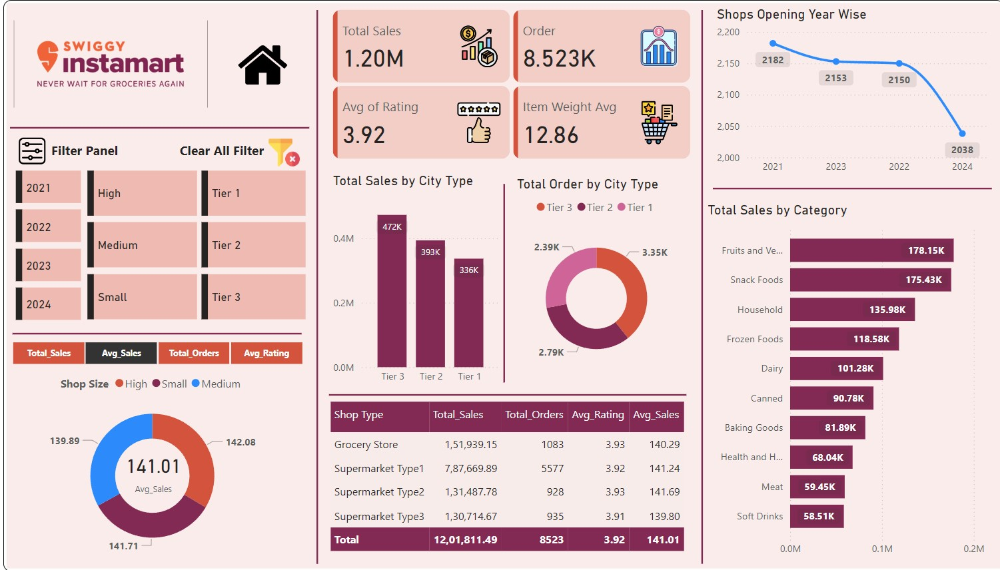
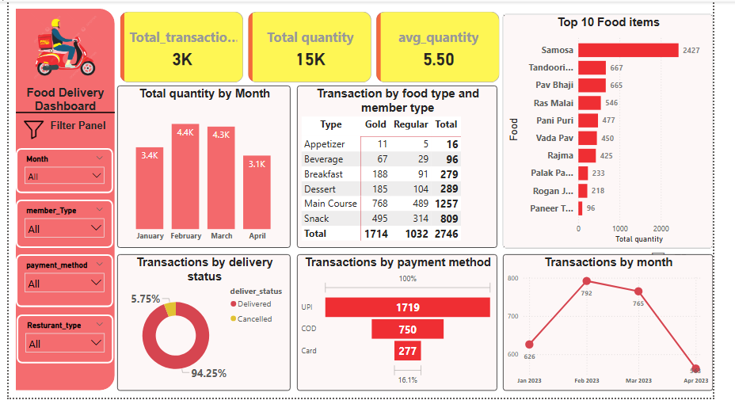
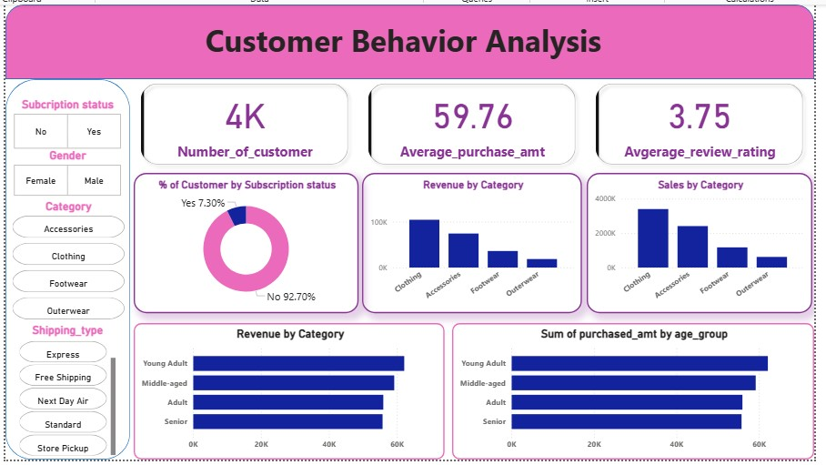
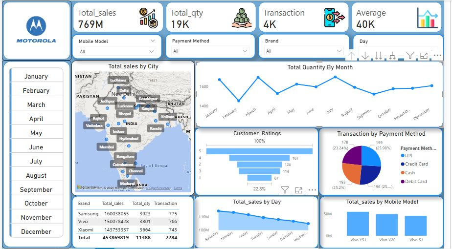
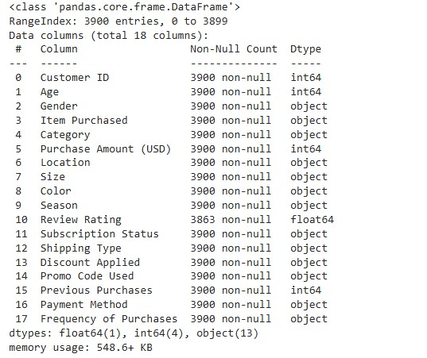
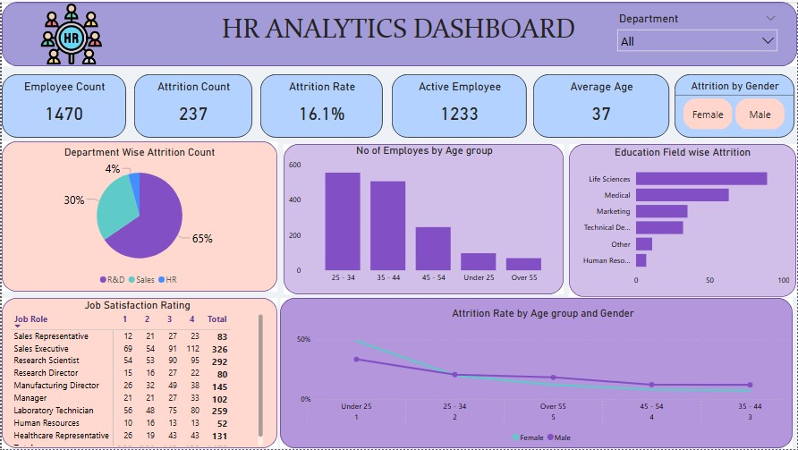
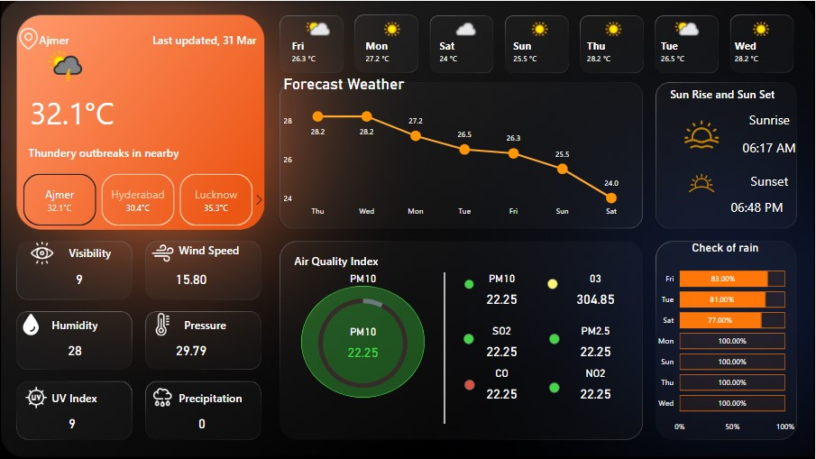

Instamart Sales Analysis Dashboard
Developed an interactive Power BI dashboard analyzing sales trends across multiple regions. Implemented KPI tracking and predictive forecasting models.
View on GitHubTransforming Raw Data into Strategic Business Intelligence
Results-driven Data Analyst with expertise in transforming complex datasets into actionable business insights. Proficient in SQL, Python, Power BI, and statistical analysis.
My skills, experience, and education
October 2025 | Forage
Rizvi College
Currently in Second Year - Expected Graduation: 2027
Continuously enhancing data analyst skills through SkillCourse certifications and hands-on projects
View my complete professional profile and detailed work experience
Showcasing my data analysis and visualization work

Developed an interactive Power BI dashboard analyzing sales trends across multiple regions. Implemented KPI tracking and predictive forecasting models.
View on GitHub
Provides clear and actionable insights into delivery performance, helping businesses track trends and make data-driven decisions efficiently.
View on GitHub
Interactive Power BI dashboard analyzing customer behavior, purchasing patterns, and revenue trends to understand customer insights.
View on GitHub
Interactive Power BI dashboard analyzing Motorola's mobile sales across various cities in India with comprehensive insights.
View on LinkedIn
Comprehensive exploratory data analysis of customer behavior using Python statistical methods and visualization techniques.
View on GitHubComprehensive collection of exploratory data analysis projects demonstrating various statistical and analytical techniques.
View on GitHub
Demonstrates the use of PostgreSQL to build and analyze a relational database for a bookstore management system.
View on GitHub
Built an interactive HR Analytics Dashboard using Power BI to analyze employee attrition and workforce trends.
View on GitHub
Developed an interactive Power BI dashboard analyzing sales trends across multiple regions. Implemented KPI tracking and predictive forecasting models.
View on GitHubI'm constantly working on new data analysis projects. Stay tuned for:
What people say about my work
"Great work! The customer segmentation and buying pattern insights are really well presented. Very actionable dashboard!"
"Really loved your customer segmentation project! The way you applied statistical methods and presented the findings shows strong analytical thinking. Keep up the excellent work!"
"Congratulations Shahalam Rayeen 🎉.. Well Done ... All the very Best!"
Continuous learning and skill development
Job Simulation Certificate
Issued: Oct 16, 2025
Advanced Excel Certification
Issued: Feb 11, 2025
Data Transformation Specialist
Issued: Dec 22, 2025
Advanced SQL for Data Analysis
Issued: Oct 16, 2025
Python for Data Analysis
Issued: Sep 5, 2025
Advanced Statistical Analysis
Issued: Dec 19, 2025
AI in Data Analysis tools
Issued: Dec 21, 2025
Let's discuss data analytics opportunities and collaborations
I specialize in data visualization, dashboard creation and data-driven insights. I work with tools like Power BI, Python, SQL, and Excel to transform raw data into actionable business intelligence.
Yes! I'm open to freelance data analysis projects, internship opportunities, and consulting work. Feel free to reach out via email or the contact form below to discuss your project requirements.
Project timelines vary based on complexity and scope. Small dashboard projects typically take 3-5 days, while comprehensive analysis projects may take 1-2 weeks. I always provide realistic timelines during initial consultation.
I'm proficient in industry-standard tools including Power BI, Excel, SQL databases, Python, and various cloud platforms. I'm also a quick learner and can adapt to your company's specific tech stack.
I take data security seriously and am willing to sign NDAs. All client data is handled with strict confidentiality, and I follow industry best practices for data protection and privacy.
Yes, I am actively seeking internship opportunities in Data Analytics, Business Intelligence, and related domains. I am open to remote, hybrid, or on-site internships where I can apply my skills in Python, SQL, Power BI, and data analysis while continuing to learn and grow professionally.
I'm always open to discussing data analytics opportunities, collaborations, or just connecting with fellow data enthusiasts!
I am a Data Analyst in training with a working portfolio — not just certificates. Every project here solves a real business problem: tracking sales performance, understanding customer churn, analyzing workforce attrition. I combine academic rigor (B.Sc IT, 2027) with practical delivery across SQL, Python, and Power BI. If you need someone who ships clean dashboards and asks the right questions about data — let's talk.
Have a project in mind or want to collaborate? Fill out the form below!